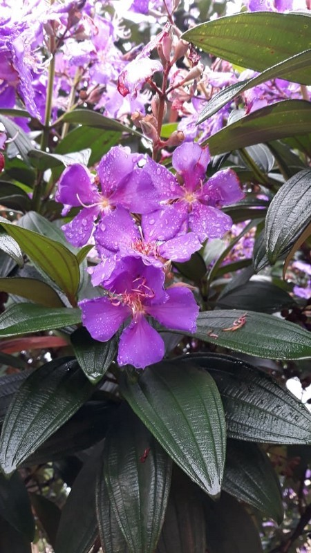

18 de Maio de 2023
Jornada do Zero à Primeira Vaga

Projeto de Estudo Antigo
Essas fotos pertenceram a um projeto escolar feito a mais ou menos 3 anos atrás, onde fotografamos flores, pesquisamos seu nome, características e curiosidades.Esse projeto escolar foi feito pelo nosso grupo no intuito de coletar informações, sobre a flora local sendo mais relevante pelas flores que possuem sua beleza natural com bastante abundância de tipos e tamanhos.
click aqui para apreder com a rocketseat